COMP1314 Data management I
Hongyi Li
Contents
Unix
Piping 管道
- 每个进程(process)都有三个文件描述符
STDIN - input from the user 输入
STOUT - normal output 输出
STDERR - Error output 错误输出
Piping refer to redirecting the output of one program into the input of another program. 管道是指将一个程序的输入重定向到另一个程序的输入
Piping a program’s output into another program:
- program_1 | program_2
- program_1’s output goes into program2 前一个程序的输出变为后一个的输入
- program_1 | program_2
Pushing a program’s output into a file:
- program_1 > file.txt
- The output of program_1 will go into file.txt 输出写入内容
- program_1 >> file.txt
- The output of program_1 will be appended to fill.txt 输出内容搭配文件末尾
- program_1 > file.txt
Get input from a file to put into a program:
- program_1 < input.txt
- program_1 gets input from input.txt 从文件读取输入
- program_1 < input.txt
Filter
- A filter is a program that takes input, changes it in some way, then outputs it again. 过滤器是一个接收输入，以某种方式更改输入然后再次输出的程序
- They can be used just like in piping. 可以像管道一样使用
- some filters:
| Filter | Function of filter |
|---|---|
| head | Takes first 10 lines 看前10行 |
| tail | Takes last 10 lines 看后10行 |
| sort | Organises data 排序(-n 按数字 -r 倒序) |
| wc | Prints number if newlines 统计行/词/字符数(wc -1 只数行数) |
| uniq | Remove duplicate lines 去重(只去掉相邻的重复行) |
| tr | 按字符替/删除 |
| cut | 切出某几列 |
| du | 预估文件大小 |
| xargs | 构建和执行命令行 |
grep
- 搜索文本，输出匹配的整行 Find regex matches in a text and print every line which contains at least one match
- 结构Example:
grep [opentions] pattern [file…] - “-i“意思是忽略大小写
- “-c“意思是找匹配了多少行，不是匹配本身
- “error“意思是找含error的行
- “-o“意思是只返回行中匹配的部分，不返回整行
- 结构Example:
grep error dummyerror.log # 找含 error 的行
grep -i error dummyerror.log # -i：忽略大小写
grep -c Manhattan file.csv # -c：直接数匹配了多少行sed 流编辑器
- 工作方式：读取输入 → 按命令修改 → 把结果输出到标准输出
- 结构Example:
sed [options] command [file ...]最常用作替换文本 - 基本格式：
- s/要查找的内容/替换成的内容/标志
- 实际例子 1：
- 在名为“file”的文件中将“abc”转换为“cba”
- Sed ‘s/abc/cba/g’ ./file
- 结尾的g代表全局，不加g的话就会只替换第一个出现的
- 实际例子 2：
echo Hello World | sed "s/Hello/Hi/I"- 输出Hi World
- 结尾的I代表忽略大小写
- 实际例子 3:
cat sed-example-delete.txt | sed '/Run/d'- 这个是清理数据，删除所有包含Run的行
- 结构Example:
awk 文本数据处理
- 适合分析表格数据
- record 记录：默认每一行就是一条记录（默认分隔符是换行 \n）
- field 字段：每条记录按空白切成若干字段，用 1、2、3… 访问；0 表示整行
- 结构Example：
- awk ‘BEGIN { 开始前执行一次 } { 每行都执行 } END { 结束后执行一次 }’
- 实际例子 1:
awk 'BEGIN { print "File\tOwner" } { print $9, "\t", $3 } END { print "done" }'- 意思为ls -l 输出中 9 是文件名，3 是所有者，所以结果是先打印表头 File Owner，再逐行打印文件名和所有者，最后打印 done
- 实际例子 2：
- awk ’ {print 1,3} ’
- 意思为print第一和第三列
Regular expression
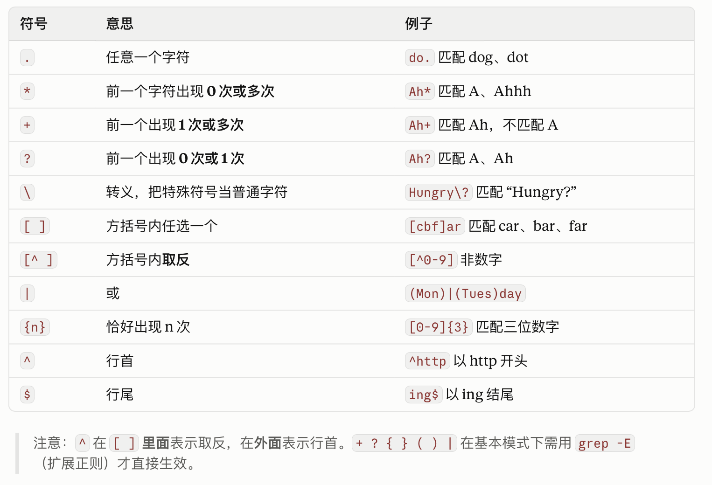
Wildcards 通配符
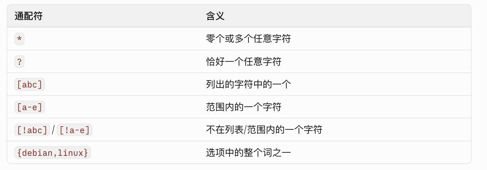
- 通配符可以组合使用
- ls *.??? | wc -l：统计扩展名恰好为3个字符的文件数
- ls ?.* | wc -l：统计文件名主体只有1个字符，带任意扩展名的文件数
- ls ?.[a-c] | wc -l 统计形如单字符.a/b/c的文件数
Permissions 文件权限
“Chmod”命令将更改文件的权限
“Ls -l”命令将显示文件的权限
许可字符串
- rwx r-x r-x 意思是 这个是可执行文件，只有所有者能修改，其他人只能读和执行
- drwxr-xr-x 意思是目录
- 第一位代表文件类型 -是普通文件，d是目录
- 2-4位 是user所有者的权限
- 5-7位 是group的权限
- 8-10位 是others其他人的权限
- r = 读 w = 写 x = 执行 - = 没有该权限
修改权限 2种方法
- 法1
- 要获取文件的权限号，请像这样排列一个表格：
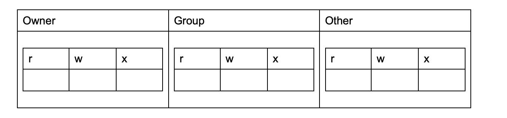
- 如果授予权限，在表格里写1，禁止写0
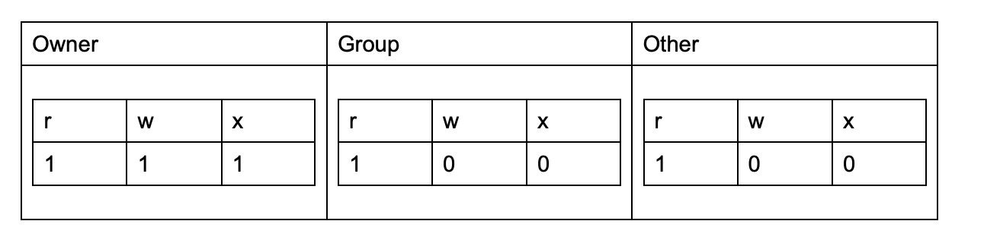
- 现在取出三组二进制数字：111 100 100
- 转换为十进制：7 4 4
- 以下为每个权限组合的表格
- 如果授予权限，在表格里写1，禁止写0
- 要获取文件的权限号，请像这样排列一个表格：
| Binary | Decimal | Meaning |
|---|---|---|
| 000 | 0 | No permissions |
| 001 | 1 | Execute only |
| 010 | 2 | Write only |
| 011 | 3 | Write + Execute |
| 100 | 4 | Read only |
| 101 | 5 | Read + Execute |
| 110 | 6 | Read + Write |
| 111 | 7 | All permissions |
- 法2 使用chmod修改权限
- 格式如下：
chmod [人员访问][操作][权限类型][路径]
- 人员： u g o a 操作：+授予 -撤销 == 直接设定
- Example:- chmod g+w file 意思为 授予group的写入file的权限
- chmod u+x runme.sh 意思为 授予users 执行文件runme.sh的权限
- chmod 744 test.sh 也是可以的
- 所有参数类型见下表：
- 格式如下：
| Person accesing |
Operation | Type of permission |
|---|---|---|
| ‘u’ - user | ‘+’ - grant | ‘r’ = read |
| ‘g’ - group | ‘-’ - revoke | ‘w’ - write |
| ‘o’ - others | ‘=’ - set | ‘x’ = execute |
| ‘a’ - all | ‘-’ = none |
Process management 流程管理
Run job运行程序
- 需要有可执行权限 chmod u+x 程序名
- u = user, +x = 增加执行权限
- 用./前缀运行当前目录下的程序 ./helloworld.sh
- 结束程序使用Ctrl-c
- Example:
touch helloworld.sh # 创建空文件
pico helloworld.sh # 用 pico 编辑器写内容
cat helloworld.sh # 查看内容:#!/bin/bash + echo "Hello world!"
./helloworld.sh # 报错:Permission denied(没有执行权限)
chmod u+x helloworld.sh # 加上执行权限
./helloworld.sh # 成功输出 Hello world!Command: ps
- 使用ps[options]来查看正在运行的进程
./helloworld.sh&- 结尾的&意思是让任务在后台进行，不再占用终端
- 终端返回 [1] 32758，[1]是job number作业编号，32758是PID
ps -u 用户名输入后会输出一以下列，含义如下表
| 列 | 含义 |
|---|---|
| PID | 进程编号 |
| TTY | 进程关联的终端 |
| TIME | 占用CPU的累计时间 |
| CMD | 启动该进程的命令 |
Command：top
- 用来查看所有进程的CPU、内存使用情况，是实时刷新的
- 与ps的区别是，ps是那一刻的情况，top是实时刷新的
Command：kill
- 使用
kill [options] <PID>来终止进程 - Example：
kill -SIGTERM 1710
./helloworld.sh & # 后台运行,返回 PID 1212
ps -u dst1m17 # 找到 helloworld.sh 的 PID
kill 1212 # 终止它
# 输出:[1]+ Terminated ./helloworld.sh- 有两种方式
- SIGTERM 可以被进程忽略，会优雅的退出（保存进度、释放资源）
- SIGKILL 强制立即终止，不能被忽略
Run in background 前后台切换
- 先Ctrl-z，暂停当前进程
- bg，让进程在后台进行
- fg，把后台进程来回前台
- 和&的区别，&是启动时就放在后台；Ctr-z+bg是运行中途才放进后台
Command：Screen
- Screen可以使即使用户断开服务器连接，让进程在screen里跑，进程仍然不会被结束
- 简而言之，Screen是一个可以脱离用户登录状态而持续存在的终端会话
- Screen常用命令见下表:
| 命令 | 作用 |
|---|---|
| screen | 创建新的screen |
| screen -s 名字 | 创建并命名一个screen |
| screen-d | 分离，让进程继续在后台跑 |
| screen-list | 列出所有screen |
| screen-r 名字或id | 恢复一个screen |
| Ctrl-d/exit | 关闭并销毁当前screen |
Data exchange
CSV and TSV
- CSV用逗号分隔列，TSV用tab，每行一条记录
- 简单，Unix工具(cut,sort,grep…)都可以直接处理
CSV defect CSV缺陷
换行符问题
- \r是回到行首，\n是下移一行
- Windows用\r\n, Mac Linux用\n
- 单元格内excel原本有2行，导出CSV后，工具按行读得到3行
读取逗号时冲突
- “The Lion, The Witch and the Wardrobe” 本身含逗号
- 用
cut -d',' -f1,2,3按逗号硬切,会把这本书名切成两列,数据错位 - CSV 的规则是含逗号的字段要用双引号包起来,但
cut不懂引号
写入时必须加引号
- 导出时,含逗号的字段要加引号，否则读不对
CSV and TSV不够用的场景
- CSV and TSV是固定行列格式，因此所有的行都必须描述同一类东西
- 适合列表，例如学生名单、新闻列表
- 不适合灵活格式的关系型数据库(模块，学生，成绩混在一个文件里)
Human-readable and Machine-readable
| 人可读 | 机器可读 | |
|---|---|---|
| 形式 | 无结构(图片) | 必须有结构 |
| 关注点 | 易用性 | 效率 |
| 特点 | 人能读写 | 人不好读写(XML) |
- 机器可读的好处:
- Searching 搜索
- Aggregation 汇总
- Prediction 预测
- Linking 链接
Relation 关系
- 建模方式:
- Hierarchical 层级模型:单一父节点，类似于树
- 查询路径: COMP1314 → Andrew Smith → Coursework 2
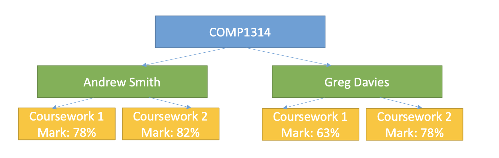
- Network 网络模型:允许多个父节点(一个学生属于多个模块),不再严格是树
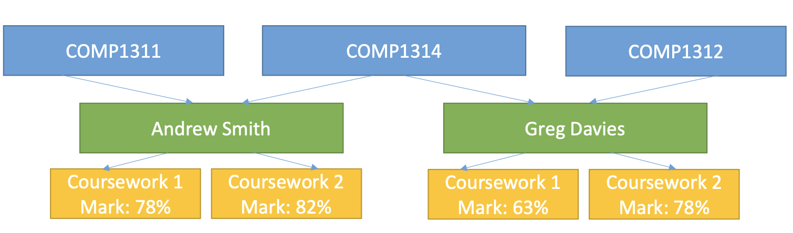
- Object- oriented面向对象：实体是类，有属性，关系用指针表示
- 如：Modules[…].Students[…].Marks[…]
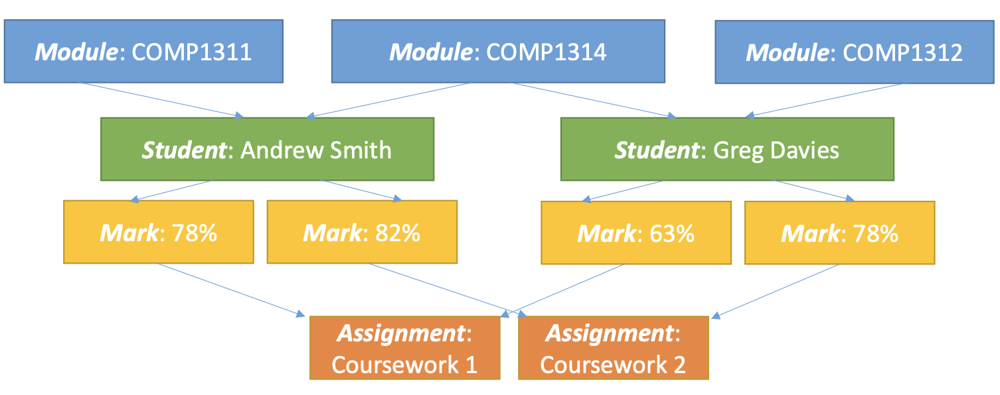
- Relational 关系模型: 实体变成表(Modules,students,marks)，用id把表连起来
- 如：
Marks[Student_ID=1, Assignment=2] 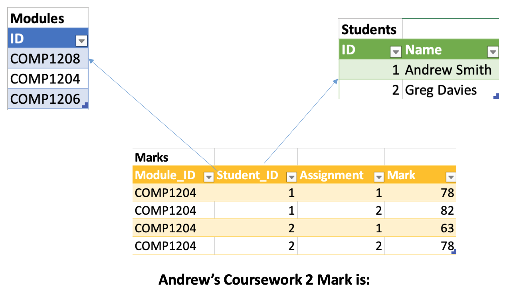
- 如：
- Hierarchical 层级模型:单一父节点，类似于树
Markup 标记 从人读到机器读
- markup就是在原文上加标注(元数据),原文不变，类似于批注
- 可以标注结构，内容，含义，方便工具处理
- Example：蚂蚁与蚂蚱
- 先标出title，para，quote，moral
- 再加属性：
<story id="1">、<para voice="narrator">、<quote character="ant"> - 层级关系也可以用标记语言表示:
<Module name="COMP1204"><Student name="Andrew Smith"><Coursework ...><Mark1>78%</Mark1>...
YAML
- 全称 Yet another markup language
- 常用于配置文件
- 技术上是Jason的超集: 合法的Jason 基本都是合法的YAML
- 语法特点:
- 用空白缩进表示层级
- 优点：容易读
- 缺点：容易写错
- 基本结构是键值对(
key: value) - 列表用-开头
- 用空白缩进表示层级
- Example:
people:
- person:
name: Tom
role: Teaching
favourite numbers:
- 42
- 13
- 3.141- 适用场景
- 适合配置文件，保存简单的应用状态
- 缺点是规则模糊，不同解析器不同结果
Json
- 全称JavaScript Object Notation javascript的对象表示法
- 为了在不同语言、程序之间互相交换数据
- json里只有: 对象Object ，列表List (一串东西)，值Value (字符串，数字，true/false，null)
- 有对象但没有类
- 语法
- 对象用
{ }, 里面是"字符串键": 值，用逗号分隔 - 列表用
[ ] - 键必须是双引号字符串
- 对象用
- Example:
{
"person": { //一整个{}是对象
"name": "Tom", //值
"role": "Teaching", //值
"lucky": [42, 13, 3.141] //列表
}
}- 在各个语言中如何使用
| 语言 | 解析 | 取值 | ||
|---|---|---|---|---|
| Java | new JSONObject("...") |
getJSONObject("person").getString("name") |
||
| Python | json.loads('...') |
myJSON["person"]["name"] |
||
| JavaScript | JSON.parse('...') |
myJSON["person"]["name"] |
myJSON["person"]["name"]先取出“person“这个键对应的值{"name": "Tom", "role": "Teaching", "lucky": [42, 13, 3.141]}接着找到name，输出Tom
使用场景：
- 网络数据传输 API调用
- 不同程序之间交换数据
- 配置文件
Markup Languages 标记语言
- 不改变内容前提下给内容额外加信息
- 可以控制样式/结构
- 机器可以解析内容
- 同上
HTML
- 分为三种：
| 类型 | 作用 | 例子 |
|---|---|---|
| 结构 structure | 文档骨架 | <body>, <h1> |
| 表现 presentation | 外观 | <b>, <i> (粗体、斜体) |
| 语义 semantics | 含义 | <strong>, <em> (强调） |
<body>, <b>虽然显示上都是粗体，但是语义不同，<strong>表示很重要，搜索引擎可以理解，<b>只是单纯变粗，提倡用语义标签
ink 互动小说标记语言
- 用于网页互动小说，另一种超文本标记语言
- 可以和Unity集成
- 核心概念
| 概念 | 语法 | 作用 |
|---|---|---|
| Knot 结 | === london === |
标签/章节，下面的内容属于这个 knot，直到下一个 knot |
| Divert 转向 | -> london |
类似 GOTO，跳转到对应 knot |
| Choice 选项 | + "Around the world, Monsieur?" |
让读者选择，选项及其下面的文字会成为故事一部分 |
XML （eXtensible Markup Language）可扩展标记语言
- 特点：
- Hierarchical（层级/树状结构）：由 tags、attributes、content 组成
- 用来承载数据carry data，而不是显示数据display data，后者是HTML的作用
- 没有预定义标签：标签可以自定义，比如
<Pizza>、<plugin> - 可以用 DTD 或 Schema 来规定标签的含义和结构
- 语法规则–辨别HTML and XML
- 所有元素都要有结束标签
- 标签区分大小写
- 元素必须正确嵌套
- 文档必须有一个root element
- 属性值必须加引号
- Example：
<menu id="file" value="File">
<popup>
<menuitem value="New" onclick="CreateNewDoc()" />
<menuitem value="Open" onclick="OpenDoc()" />
<menuitem value="Close" onclick="CloseDoc()" />
</popup>
</menu>- Namespaces命名空间
- 由于tag是自己定义的，不同的人可能用同一个名字表示不同的东西
- 例：
- Vancy 眼中的
<Person>：名字、妻子、三个孩子 - Dennis眼中的
<Person>：员工 ID、价值 18000、按了 647 个按钮
- Vancy 眼中的
- 解决方法：加前缀
- 语法：
xmlns:前缀="URI"，之后就可以写前缀:标签名- 前缀localName是随便起的，URI才是namespaces唯一的名字
<Employee xmlns:personal="https://buttonfactory/personal"
xmlns:work="https://buttonfactory/work">
<personal:Person name="Joe">...</personal:Person>
<work:Person id="106111101">...</work:Person>
</Employee>- Schema 模式
- Schema规定了合法数据的样子，赋予结构化数据含义
- 例如所有餐厅都用一个schema写菜单，方便程序直接对比
- Example:
- 设计披萨 schema
- 方法： XSD (XML Schema Definition), DTD（Document Type Definition）
- 只要有属性或子元素就是complex type
| SimpleType | ComplexType |
|---|---|
| 只能包含文本 | 可以有属性 |
| 不能有子元素 | 可以有子元素(空、元素、文本、或混合) |
| 不能有属性 | |
例: <Base>Pan</Base> |
例：Toppings里有多个Topping;或者带name属性的<Pizza> |
<xs:element name="Pizza"> <!-- 根元素 Pizza -->
<xs:complexType> <!-- 有子元素+属性 → complex -->
<xs:sequence> <!-- 下面三个按顺序 -->
<xs:element name="Base" type="xs:string"/> <!-- 简单元素，恰好一次 -->
<xs:element name="Cheese" type="xs:string"/>
<xs:element name="Toppings">
<xs:complexType>
<xs:sequence>
<xs:element name="Topping" type="xs:string"
minOccurs="0" maxOccurs="unbounded"/> <!-- 0 到无限个 -->
</xs:sequence>
</xs:complexType>
</xs:element>
</xs:sequence>
<xs:attribute type="xs:string" name="name"/> <!-- 属性放最后 -->
</xs:complexType>
</xs:element>- 关键写法：
<xs:sequence>：子元素必须按顺序出现<xs:all>：子元素顺序任意- 两者默认
minOccurs = 1、maxOccurs = 1（即“恰好出现一次“） minOccurs="0"→ 可选maxOccurs="unbounded"→ 可以重复无限次<xs:attribute>要写在 complexType 的末尾（sequence 之后）use="required"→ 属性必填
Relation model 关系模型
The relational data model 关系数据模型
- 关系数据库分为两部分：
- 数据库管理系统（DBMS），管理数据库的软件
- 数据库（实际数据本身）
- 还有多种类型的数据库技术，例如：
- 关系：MySQL、SQLite、PostgreSQL
- 非关系（NoSQL）：MongoDB，Couchbase
Independence 独立
- 数据独立性：从应用程序和用户中绝缘数据的结构和存储方式
- 逻辑独立性：防止逻辑结构变化（模式/属性）
- 物理独立性：防止物理结构变化（如何储存）
DBMS
- DBMS是一组计算机程序，它：
- 支持数据模型来表示数据库
- 存储和管理大量数据
- 管理交易和并发transaction management, concurrency control
- 控制访问access control
- 具有弹性resiliency（可以从崩溃中恢复）
Data model 数据模型
- 数据模型是描述数据的数学概念
- 关系模型是使用最广泛的数据模型
- 每个数据模型都必须配一种数据语言，它分成两个子语言：
- DDL（Data Definition Language，数据定义语言）
- 定义结构，即模版
- 类似于设计表格的表头
- DML（Data Manipulation Language，数据操纵语言）
- 对数据进行增、删、改、查
- 往表格里填数据、找数据
- DDL（Data Definition Language，数据定义语言）
Relational data model 关系数据模型
- 关系数据模型是一种使用关系relations的数据模型
- 正式定义：关系 = 若干集合的笛卡尔积的子集subset of cartesian product of sets
- 一个关系就是一张表
- 非正式说法：关系就像表格，或者说是数据库表中记录的集合
- 每一列是一个属性attribute
- 每一行是一个元组Tuple
- k-ary relation k元关系是指有k列关系
- 关系的5个性质
- 每一行代表R的一个k元组
- 行的顺序无关紧要
- 所有行都互不相同
- 列的顺序也不重要
- 每一列的含义由它的名字来表达
- 被SQL、Microsoft Access使用
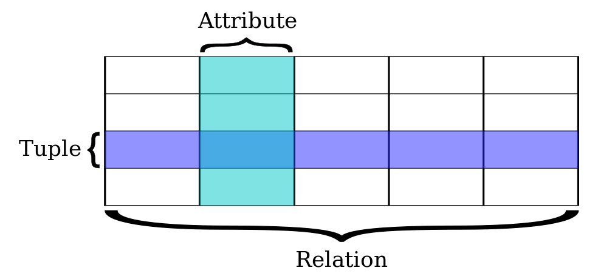
- 模式（schema）是某个 k 元关系的“蓝图“或“模板“
- 模式存储关系名和属性的有序序列
- DBMS 会实现这个模式，给出类型定义
- 数据库中存放的是模式的实例instances，实例必须遵守模式所规定的性质
Fundamental Discrete Mathematics 离散数学基本概念
- k-tuple k 元组：k 个元素的有序序列，元素可以重复。例如 (2,0,1) 是 3 元组，(a,b,a,a,c) 是 5 元组
- 笛卡尔积: D₁ × D₂ × … × Dₖ：所有满足 dᵢ ∈ Dᵢ 的 k 元组 (d₁, d₂, …, dₖ) 组成的集合
- 基数公式：|D₁ × D₂ × … × Dₖ| = |D₁| × |D₂| × … × |Dₖ|
- 例：D₁ = {0,1}，D₂ = {a,b,c,d}，则积的大小 = 2 × 4 = 8
- k-ary relation k元关系 和 arity元数
- 一个 k-ary relation 是 k 个集合笛卡尔积的子集，k 叫做 arity 元数，其实就是“表有几列“
- 一元unary：R = {0, 2, 4, …, 100}，偶数集合
- 二元binary：T = {(a,b) : a 和 b 生日相同}
- 三元ternary：S = {(m,n,s) : s = m + n}，例如 (1,2,3)、(5,5,10)
Schema and Instance 模式与实例
- Relation schema关系模式:
- 关系名+属性列表, 例如Student(ID, name)
- 在真正的DBMS里，模式还会规定每个属性的数据类型, 例如 Student(int: ID, string: name)
- Instance实例:
- 符合这个模式的一个具体关系（具体的一张填好数据的表）
- Schema只有一个，而Instance可以有很多
- Intension 与 Extension内涵与外延
- 内涵可以理解为表格的结构，实例则为表格的数据
Keys and functional dependencies 键和函数依赖
key 键
- 键是指能够唯一标识一条记录的属性或属性集合,关系里不允许两行在这组属性上的值完全相同
- Example: number (ID) or a first name + surname
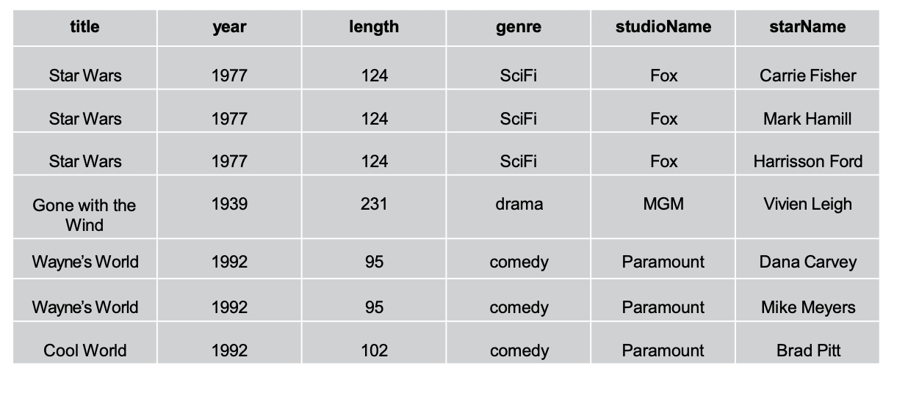
- 判断{title, year, length, starName} 是键吗？是，因为这四列组合在一起没有重复的项
- 判断{year, studioName} 是键吗？不是，Paramount 在 1992 年有好几行
Functional dependency 函数依赖
- 函数依赖关系是将列映射到其他列的函数
- 定义: A1,…,An → B1,…,Bm 成立 ；只要两行在A上相同，它们在B上也一定相同
- A叫做determinant决定因素 B叫做dependent set依赖集
- Example:
| First name | Last name | Age | Sex |
|---|---|---|---|
| Hongyi | Li | 20 | M |
| Huateng | Ma | 55 | M |
| Fei | Wang | 57 | F |
| Li | Li | 99 | F |
- 以上表格满足函数依赖:
- (first name, last name) → (age, sex)
- 不满足的依赖:
- (last name) → (age)
- (last name) → (sex)
- (last name) → (age)
- 存在依赖因为每个名字+姓都有一个唯一确定的年龄+性别
- 不存在依赖因为当输入Li时，会有20，99两个年龄以及M和F两个性别
- 注意: 一张表只能证明 FD不成立，不能证明 FD一定成立
- 存在一个反例，整个表就不成立
- 没有反例只能说明目前没冲突，不能确定它成立
Functional dependency Inference rules 函数依赖推理规则
Splitting/Combining 拆分/合并规则
- 如果存在(A1, A2, A3…) → (B1, B2, B3…)，那可以推出
- (A1, A2, A3…) → B1
- (A1, A2, A3…) → B2
- (A1, A2, A3…) → B3 etc.
- (A1, A2, A3…) → B1
Trivial FD 平凡依赖
- 右侧一定是左侧的子集
- (A1, A2, A3) → (A1, A2)
- (A1, A2, A3) → A3
- (A1, A2, A3) → (A1, A3) etc.
Implication 蕴含
- 所有满足S的表都满足X → Y，就说 S 逻辑蕴含 X → Y
- 传递性 Transitivity：A → B，B → C ⊧ A → C
- 增广律 Augmentation：A → B ⊧ AC → BC（两边同时加上同一个属性）
Equivalence 等价
- 如果S ⊧ T 且 T ⊧ S
- 那 S 和 T 等价，即它们被完全相同的表所满足(满足相同的函数依赖)
More keys
Superkey 超键
- X 是超键，当且仅当对每个属性 Aᵢ，都有X → Aᵢ
- 因此，知道了超键的值，整行其他所有列就都确定了，所以它能唯一定位一行
- 全部属性的集合永远是超键，所以每个关系至少有一个超键
| First name | Last name | Age | Sex |
|---|---|---|---|
| Hongyi | Li | 20 | M |
| Huateng | Ma | 55 | M |
| Fei | Wang | 57 | F |
| Li | Li | 99 | F |
- 上述表格中
- (first name, last name)就是一个superkey,因为都是唯一的
- (Last name)就不是一个superkey因为有两个Li
Candidate key 候选键
- 一种特殊的superkey，是最小的超键
- 去掉任何一个属性就不再是超键
- 上表中{First name} {Age} {Last name, Sex}都是候选键
- {Last name, Sex}中删掉 Sex，剩 {Last name}：Li 重复，删掉 Last name，剩 {Sex}：M、F 重复
Closure 闭包
- 如何找到所有候选键？
- 我们需要找到所有超键（superkeys）
- 我们需要弄清楚如何证明 F ⊧ X → Y（F 是一组函数依赖）
- X⁺ = { Aᵢ : F ⊧ X → Aᵢ } 是 X 关于 F 的闭包
- 简单来说，X⁺ 是 schema 中所有满足以下条件的列的集合：如果 F 中的函数依赖都成立，那么 X → X⁺ 中的这些列也成立
- F ⊧ X → Y 当且仅当 Y ⊆ X⁺
- 这句话的意思是：“只要 F 中的所有依赖都成立，X → Y 就成立“这个条件为真，当且仅当 Y 中的列全都属于“在 F 成立时 X 能推出的列”
- 它让我们能够用计算的方式找出超键，进而找出候选键。
- 如果 X⁺ 里没有包含所有的列，我们就可以确定 X 不是超键。如果包含了所有的列，那它就是超键
Closure algorithm 闭包算法
- 闭包算法可以帮我们检查一组列是否为超键，需要给出：
- 一个 schema：R
- 一组函数依赖：F
- R 中要检查是否为超键的一组列：X
- 闭包算法的步骤如下：
- 从集合 X 开始，把它记作 X₀
- 查看 F，检查是否存在某个 Y → Z，使得 Y 是当前集合 Xₙ 的子集
- 如果存在，就把 Z 与 X₀ 取并集，记作 X₁。之后用 X₁ 代替 X₀
- 不断重复、反复遍历 F，直到 Xₙ 不再变化为止
- 这时你得到的就是 X⁺
- 举个例子：
- R(A,B,C,D,E,H,G) - 这是我们的 schema
- F = { AB → CD, C → EH, AC → H } - 这是函数依赖的集合
- {A, C}⁺ - 这是我们要求的
| Xₙ | 值 | 解释 |
|---|---|---|
| X₀ | {A, C} | 一开始，我们从 X 中的值出发，也就是我们想判断是否为超键的那组列。 |
| X₁ | {A, C} ∪ {E, H} | F 中有 C → EH，而 X₀ 中有 ‘C’。因此我们可以把这个函数依赖的结果并入 X，并把下标加一。 |
| X₁ | {A, C, E, H} | 现在它应该是这样。 |
| X₂ | {A, C, E, H} ∪ {H} | F 中有 AC → H，而 X₁ 中有 ‘A’ 和 ‘C’，所以我们可以把 ‘H’ 并入 X。 |
| X₂ | {A, C, E, H} | 嗯，好像什么也没变。而且也没有其他可用的函数依赖了。因此这就是我们的输出：{A, C}⁺。 |
- 因为 {A, C}⁺ 只有 {A, C, E, H}，没有包含 R 中的所有列，所以它不是超键
- 再来看另一个例子：
- R(A,B,C,D,E,H,G) - 这是我们的 schema
- F = { AB → CD, C → EH, D → G } - 这是函数依赖的集合
- {A, B}⁺ - 这是我们要求的
| Xₙ | 值 | 解释 |
|---|---|---|
| X₀ | {A, B} | 一开始，我们从 X 中的值出发，也就是我们想判断是否为超键的那组列 |
| X₁ | {A, B} ∪ {C, D} | F 中有 AB → CD，而 X₀ 中有 ‘A’ 和 ‘B’，因此我们可以把这个函数依赖的结果并入 X，并把下标加一 |
| X₁ | {A, B, C, D} | 现在它应该是这样 |
| X₂ | {A, B, C, D} ∪ {E, H} | F 中有 C → EH，而 X₁ 中现在有 ‘C’ 了，所以我们可以把 ‘E’ 和 ‘H’ 并入 X |
| X₂ | {A, B, C, D, E, H} | 现在变成了这样 |
| X₃ | {A, B, C, D, E, H} ∪ {G} | F 中有 D → G。因为 X₂ 中有 ‘D’，所以我们可以把 ‘G’ 并入 X |
| X₃ | {A, B, C, D, E, H, G} | 到这里就结束了，没有其他可用的函数依赖了。这就是 {A, B}⁺ |
- {A, B}⁺ 包含了 R 中的所有元素，说明 {A, B} 是超键
- {A, B} 也是候选键，因为 {A}⁺ 是 {A}，{B}⁺ 是 {B}；它是这个 schema 中最小形式的超键
Relational algebra 关系代数
基本概念
| SID | Name | Major |
|---|---|---|
| 101 | Lina | AI |
| 102 | Dylan | CS |
- Attribute属性:
- 就是列,比如name,每个属性都有一个domain域，也就是允许取值的集合
- Tuple元组:
- 就是行，每个值对应一个属性。比如 (101, ‘Lina’, ‘AI’)
- Arity元数/度
- 列的数量，students有3个属性，arity=3
- Cardinality基数
- 行的数量
- Relation关系:
- 结构相同的元组组成的集合
基本运算
Union 并 ∪
R \cup S = \{ t \mid t \in R \text{ or } t \in S \}
- 把两个关系的行合起来，重复的只保留一份
- 必须同时满足
- 两个关系的 arity 相同（列数一样）
- 对应位置的属性域相同（类型一样）
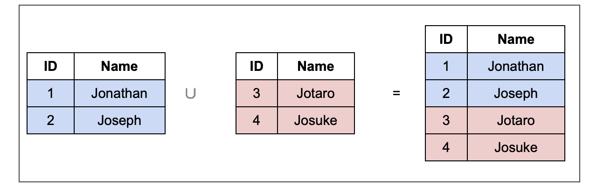
Difference 差 −
R - S = \{ t \mid t \in R \text{ and } t \notin S \}
- 当对两个关系执行“差”操作时，从最左边的表格中拿走元素
- 此操作返回左侧表格，但不返回右侧表格中的元素。
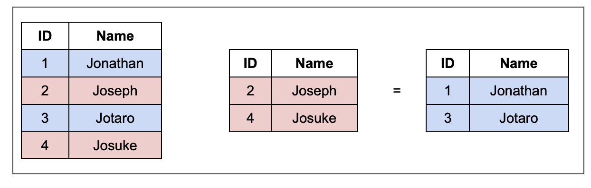
Cartesian Product 笛卡尔积 ×
R_1 \times R_2
- 笛卡尔积的工作方式与集合论相同
- 这将返回一个表格，其中包含左侧表格中记录和右侧表格中记录的所有可能配对
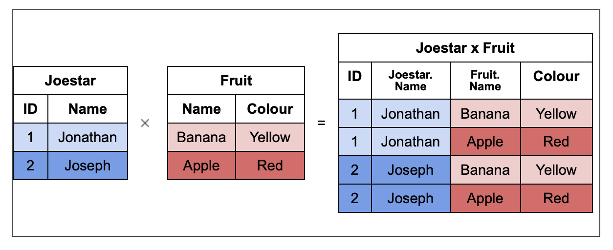
Projection 投影 π
\pi_{A_1, …, A_k}(R)
- 投影操作就像“过滤器”一样。
- 它从我们的表格中删除任何不需要的列，只留下我们想要的列。
- 语法是这样的:

- 其中“<属性列表>”是我们想要保留的列列表，而“<关系名称>”是要过滤的表的名称
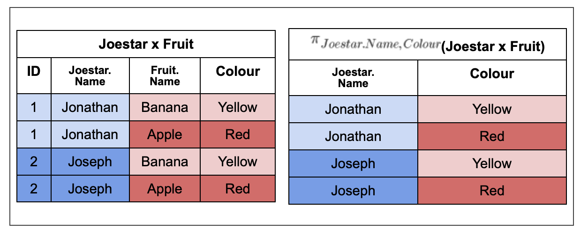
Selection 选择 σ
\sigma_\theta(R) = \{ t \in R \mid \theta(t) = true \}
- “selection”运算符允许您在条件旁边检查记录。
- 如果条件显示为假，则不要将此记录包含在结果中
- 如果条件显示为真，则将此记录包含在结果中
- 语法是这样的:

- 其中“θ”是要使用的条件，“<关系名称>”是要检查的记录表的名称
- 条件可以使用谓词逻辑的语法
- 最后一个例子在实践中有点不必要，但它展示了如何在条件中使用谓词逻辑语法
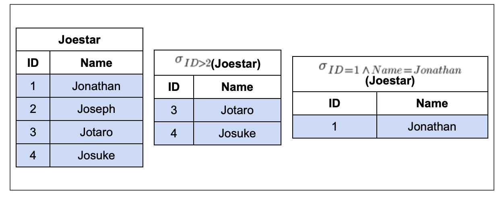
Rename 重命名ρ
- 重命名运算符只需将列从一个名称重命名为另一个名称
- 这在“union”操作中特别有用，因为可以将一个表中的列重命名为另一个表的相同列名，然后将它们“union”在一起。
- 语法是这样的:

- “
<oldname>”是列的旧名称，“<newname>”是列的新名称，“<关系名称>”是我们应该重命名的列的关系名称 - 还可以通过以下方式重命名多个列：

- 这将返回相同的表格，但O1、O2和O3列分别重命名为N1、N2和N3
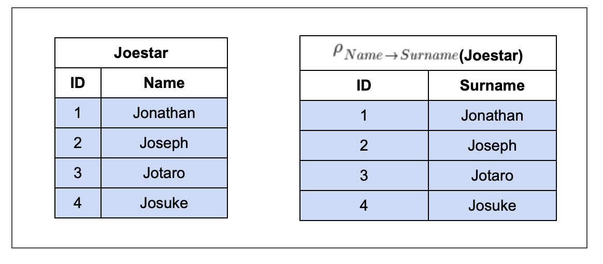
Example
Relations:
Lecturers(LID, Name, Department)
Teaches(LID, Module, Semester)
Modules(Module, Credits)
Question: Write a single relational algebra expression to find the names of all lecturers in the CS department who teach at least one 15-credit module in Semester 1.
Step 1 – Combine all relations:
Lecturers \times Teaches \times Modules
This produces every possible combination of lecturers, teaching records and modules.
Step 2 – Filter with selection:
\sigma_{Lecturers.LID=Teaches.LID \ \land\ Teaches.Module=Modules.Module \ \land\ Department='CS' \ \land\ Credits=15 \ \land\ Semester=1}(Lecturers \times Teaches \times Modules)
- Linking conditions (match IDs between tables):
Lecturers.LID = Teaches.LIDTeaches.Module = Modules.Module
- Question conditions:
Department = 'CS',Credits = 15,Semester = 1
Step 3 – Project the attribute we want:
\pi_{Name}(\sigma_{Lecturers.LID=Teaches.LID \ \land\ Teaches.Module=Modules.Module \ \land\ Department='CS' \ \land\ Credits=15 \ \land\ Semester=1}(Lecturers \times Teaches \times Modules))
Check with sample data:
Lecturers
| LID | Name | Department |
|---|---|---|
| L1 | Rahman | CS |
| L2 | Siti | Maths |
| L3 | Wei | CS |
Teaches
| LID | Module | Semester |
|---|---|---|
| L1 | COMP1314 | 1 |
| L1 | COMP1206 | 1 |
| L2 | MATH1001 | 1 |
| L3 | COMP1215 | 2 |
Modules
| Module | Credits |
|---|---|
| COMP1314 | 15 |
| COMP1206 | 15 |
| MATH1001 | 15 |
| COMP1215 | 7.5 |
- Step 1: arity = 3 + 3 + 2 = 8 columns; cardinality = 3 × 4 × 4 = 48 rows
- Step 2: only 2 rows survive:
| Lecturers.LID | Name | Department | Teaches.LID | Teaches.Module | Semester | Modules.Module | Credits |
|---|---|---|---|---|---|---|---|
| L1 | Rahman | CS | L1 | COMP1314 | 1 | COMP1314 | 15 |
| L1 | Rahman | CS | L1 | COMP1206 | 1 | COMP1206 | 15 |
- Siti fails: Department = ‘Maths’
- Wei fails: Semester = 2 and Credits = 7.5
- Step 3 result:
| Name |
|---|
| Rahman |
- Rahman 满足条件的课有两门，σ 之后有两行，但 π 之后只剩一行，因为关系是集合，π 自动去重。“at least one” 就是靠这个实现的：满足一门或多门，名字都只出现一次
Derived Operations 派生运算
Set Intersection 交集∩
- 定义：R ∩ S = { t | t ∈ R 且 t ∈ S }，也就是两个关系共有的元组
- 基本运算表达：R ∩ S = R − (R − S)
- 性质：满足交换律、结合律，并且是幂等的（R ∩ R = R）
- R − S 是“R 里不在 S 中的部分“，再从 R 里去掉这部分，剩下的就是两边都有的
Assignment 赋值← 或 =
- 定义: 类似于编程中的临时变量 P ← R ∩ S
- 不增加表达能力，只是 syntactic convenience句法便利
Join 连接⋈
- 核心公式：R ⋈_θ S = σ_θ(R × S)
- 先做笛卡尔积（所有两两组合），再用条件 θ 筛选
- 类型:
- Theta-join ⋈_θ
- 条件: 任意比较：=, ≠, <, ≤, >, ≥
- 重复列: 保留
- Equi-join ⋈_A=B
- 条件: 只用 =
- 重复列: 保留
- Natural join ⋈
- 条件: 自动对所有同名属性做 =
- 重复列: 去掉
- 注意: natural join会匹配所有同名属性，不只是你想要的那个
- Theta-join ⋈_θ
- Example:
- Equi-join 的结果有
SID | Name | Major | SID | Module | Grade，SID 出现两次 - Natural join 的结果是
SID | Name | Major | Module | Grade，SID 只出现一次
- Equi-join 的结果有
Division 除法 ÷
- 定义：R(X, Y) ÷ S(Y) = { x | 对 S 中每一个 y，(x, y) 都在 R 里 }
- 基本运算表达：R ÷ S = π_X(R) − π_X( (π_X(R) × S) − R )
Outer Joins外连接
- inner join普通连接 会把没匹配上的元素丢掉，outer join会保留它们，缺的属性填充NULL
- Left ⟕：保留左表全部
- Right ⟖：保留右表全部
- Full ⟗：两边都保留
Normalisation 规范化
- 规范化避免了冗余数据，使数据库更高效，保持其大小更小，并使其更容易维护。
- 有4种正态形式：
- 1 Normal form 第一范式
- 2 NF 第二范式
- 3 NF 第三范式
- BC NF BC范式 (Boyce-Codd 鲍依斯-科德范式)
1NF 原子性(消除多值，重复列)
- 要以1NF形式，每个单元格中必须有一个信息，并且不应该有重复的组。
- 而且每一行都能被主键唯一识别
- 主键可以是单列，也可以由多列组成
- Example:
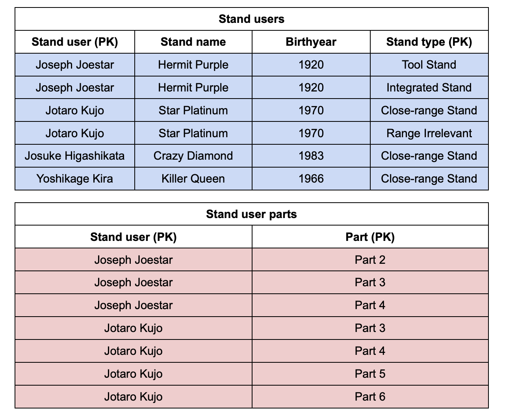
- 原表的Stand type和Parts可能是多值属性，违反原子性
- Parts：拆出一张新表，每个“人 + 部数“组合占一行
- Stand type：把多个值展开成多行，所以主键变成Stand user, Stand type
- 这现在是第一范式，因为重复的数据（部分）已被拆分到自己的表中，满足1NF
- 注意，表格“stand user parts”除了主键外什么都没有；这意味着“stand user parts”没有任何非主属性
2NF 消除部分依赖
- 要成为第二范式，所有属性在功能上必须依赖于整个主键。
- 更简单地说，对于每个属性，以下内容必须为真：K→Ai
- Example:
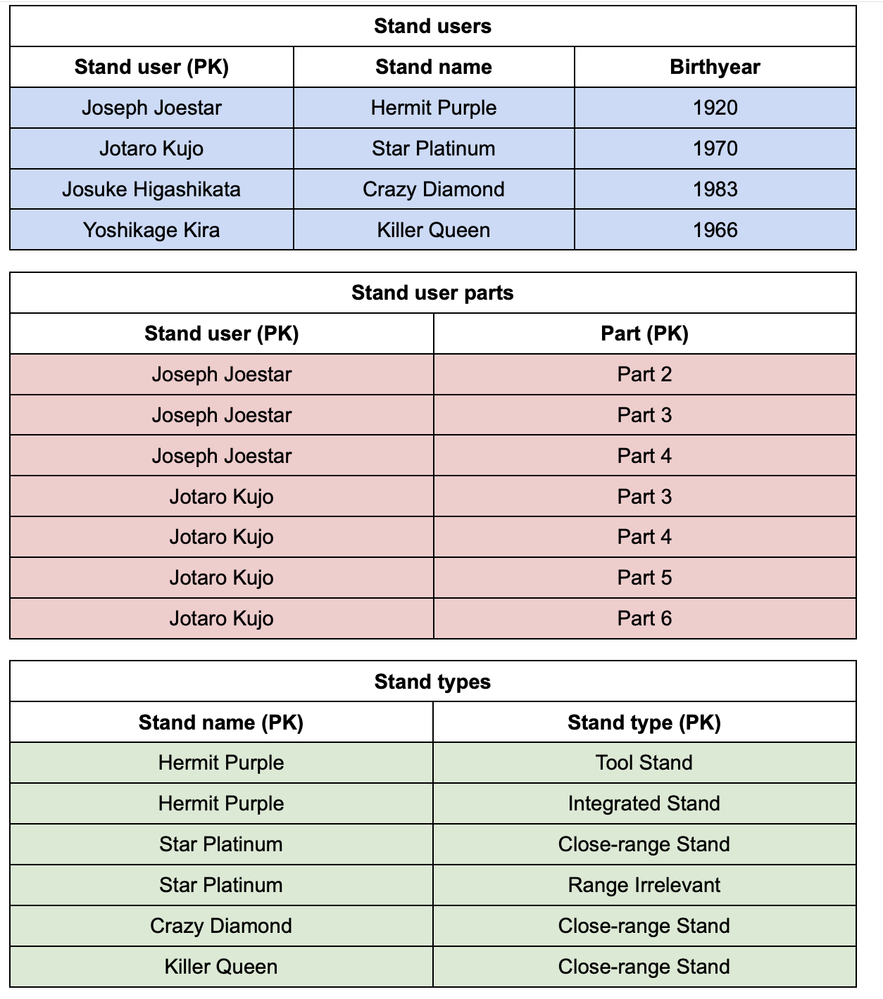
- 现在是第二范式。 在之前的“Stand user”表中，“Birthyear”列在功能上依赖于“Stand user”，但与“Stand type”无关。 这意味着“Stand user”在功能上并不依赖于整个主键，这意味着它不在2NF中
- 为了解决这个问题，“Stand type”被移到了自己的表格中。 现在，“Stand user”表只有一个列的主键：“Stand user”。 “Stand user”的每个列在功能上都依赖于主键，使其成为2NF
- 也就是说，将部分依赖拆出去，使得每张表内的每个列都依赖于整个主键
3NF 消除传递依赖
- 对于每个K→Ai，不应该有K→Ai→Aj
- 基本上，每个属性都应该只依赖于主键
- 要检查表格是否在3NF中，可以从从主键到非主属性，然后从该属性到另一个非主属性，所有这些都通过函数依赖性。 如果能做到这一点，那么该表格不是3NF
- 满足2NF但不满足3NF的表格example:
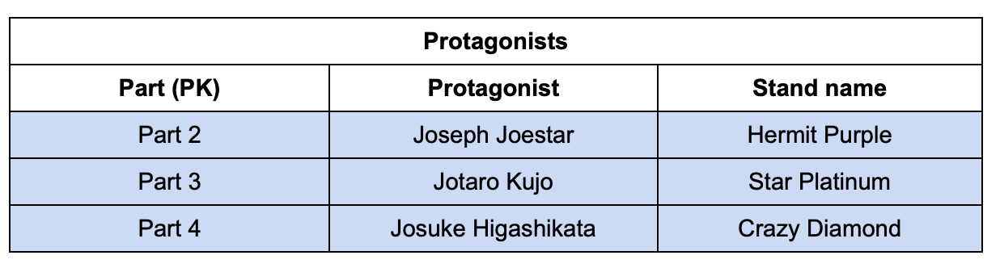
- 以上表格存在一条传递依赖:Part → Protagonist → Stand name，不满足3NF
- Stand name 并不是直接由主键 Part 决定的, 而是通过非主属性 Protagonist 间接决定的,因此违反了nothing but the key
- 主键只有Part一列，不可能存在部分依赖，满足2NF
- 为了解决这个问题，我们可以创建一个单独的表格：
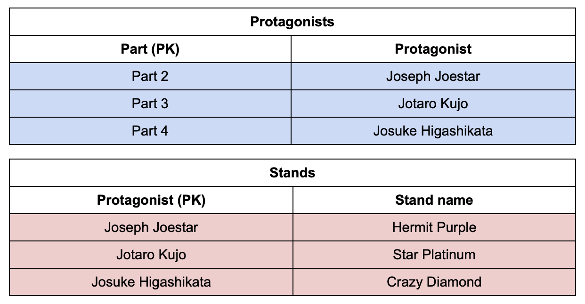
- 现在上表满足3NF了
BCNF BC范式 (非键的决定因素)
- 拥有的每一个函数依赖，例如 A→B，以下情况之一必须为真：
- “A”必须是超键
- 依赖性是一种平凡依赖（B ⊆ A）
- 要检查表格是否在BCNF中，找到一个函数依赖关系A→B，其中“A”不是超级键。如果能找到一个，那么你的表格不在BCNF中。
- 满足3NF而不满足BCNF中的表格示例如下：
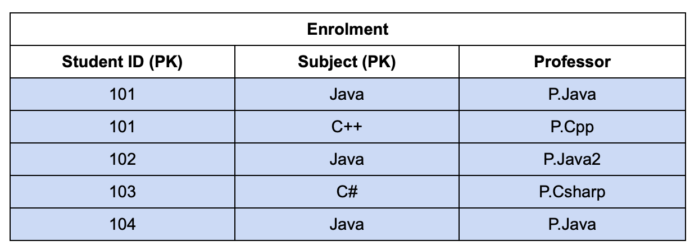
- 主键是学生证和科目。
- 然而，subject和professor之间存在依赖性：
- （professor）→（subject）
- 虽然subject是一个主属性，但professor本身是一个非主属性（不是超键），这是BCNF中不允许的
- 为了解决这个问题，将其分解为2个表格：
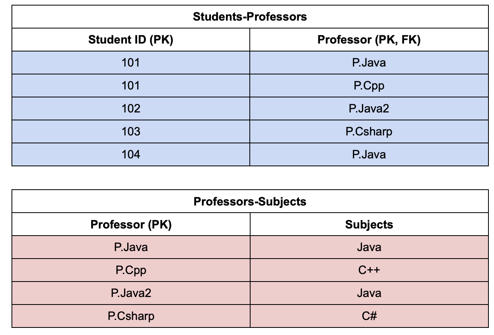
- 在students-professors表中，所有函数依赖关系都是平凡的（它们都与主键本身有关(右边都是左边的子集)）
- 在professors-subjects表中，唯一存在的函数依赖是（professor）→（subjects），（professor）是一个超键，因此两个表都满足BCNF
Modelling and SQL basics 数据建模和SQL基础知识
Types of data modelling
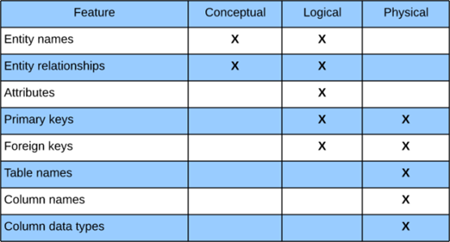
Conceptual (ideas) 概念模型 构思层
- 包含重要的实体以及它们之间的关系
- 不指定属性
- 不指定主键
- 作为逻辑数据模型的基础
- 可以把它看作一个非常宽松的类图，没有操作（方法），也没有属性
Logical (high level) 逻辑模型 高层设计
- 包含所有实体以及它们之间的关系
- 为每个实体指定属性
- 为每个实体指定主键
- 指定外键，用来标识不同实体之间的关系
- 设计normalisation规范化
- 这一层不要使用索引，因为这会妨碍规范化工作
Physical (low level) 物理模型 底层设计
- 指定所有的表和列
- 包含外键，用来标识表与表之间的关系
- 可能包含规范化，视用户需求而定
- 可能与逻辑数据模型有很大差异
- 会因所用的DBMS(数据库管理系统)不同而不同
- 这一层应该尽可能的使用indexes索引
Entities 实体
- 现实中的一个概念，例如planet
- 实体是系统中的一个对象，拥有属性，并与其他实体存在关系
Attributes 属性
- entities的单个属性，例如Planet的name
Relation 关系模式
- entities在数据库理论中的表示，类似等于一张表
Relationship 联系
- 两个relation之间的连接，例如“一个 Planet 只有一个 Ruler，一个 Ruler 可以有多个 Planet“
One-to-one 1:1
- 例如一个planet只有一个统治者和一个种族
One-to-many 1:N
- 一个 A 可以对应多个 B，但每个 B 只属于一个 A。B和A都为实体
- 例如一个统治者可以统治多个planet、多艘船
- 例如一个画家可以有很多画笔，但画笔只能属于一个画家
Many-to-many M:N
- 一个实体可以有很多其他实体，另一个实体也可以有很多其他实体
- 例如一个星球有多种资源，一种资源也出现在多个星球上
- 例如一个学生可以有很多课程，一个课程可以有很多学生
Crow’s Foot Notation 鸦脚符号
- ERD 上连线末端的符号表示数量
- 末端的符号读法是：靠近实体的符号 = 最大值，远离实体的符号 = 最小值
| 符号 | 含义 |
|---|---|
| —┼ | One（一） |
| —< | Many（多，像鸟爪） |
| —┼┼ | One and only one（恰好一个） |
| —○┼ | Zero or one（零或一，○ 表示可以没有） |
| —┼< | One or many（至少一个） |
| —○< | Zero or many（零个或多个） |
Data type 数据类型
- CHAR(n) 定长，不足补空格；VARCHAR(n) 变长，只存实际内容
- TEXT 大文本，不能建索引
- DATE ‘YYYY-MM-DD’，TIME ‘HH:MM:SS’
- BLOB 不规定格式的二进制数据，如图片
Keys 主键
- 使表里每一行都要能被唯一确认
Foreign 外键
- 在 Physical 层引入
- 一张表里指向另一张表主键的列，用来把两张表连起来
- 相当于一个“门牌号“，告诉你这一行属于另一张表的哪一行
- 例如 Photo 表里的 AlbumID，表示这张照片属于几号相册
Join table 连接表
- 多对多关系无法直接用一个外键表示，需要再建一张中间表
- 中间表存两边的外键，每一行记录一对关联
- 例如 Tag_Photo 表（TagID, PhotoID）：记录哪张照片贴了哪个标签
- 关系本身的属性也放在连接表里
Natural Key and Business Key 自然键和业务键
- 是数据本身自带的唯一标识
- 简单键：email，社保号
- 复合键：(楼，层，房间号）
- 优点：省空间，索引更好，查询更直观
- 缺点：不一定存在，也不一定稳定（例如学生可以改名）
Surrogate key and Synthetic key 代理键
- 系统自动生成，没有现实意义的ID，只是单纯为了技术目的而存在
- 在physial设计阶段规范后加入
- 优点:
- 稳定，几乎不会变
- 性能好，例如比较 id=3 比比较 name=‘John Smith’ 快
- 统一，所有表都用 id，统一
- 简化 JOIN 的写法
- 缺点:
- 用户常按自然键查询，还需要额外建索引
- 自然键若要唯一，需要额外加唯一约束
- 泄露信息，例如id=123 说明至少还有 122 个客户（German tank problem）
- 暗示先后顺序
UUID and Auto-increment INT UUID和自增整数比较
- UUID/GUID
- 是 128 位的标识，总数 2¹²⁸ ≈ 3.4×10³⁸（约 340 undecillion 个）
- 理论上不保证唯一，但实际上几乎不可能重复，而且生成时不需要任何协调
- 不暗示顺序，各自随机生成即可，不易读，比较慢，适合分布式系统
- Auto-increment INT
- 暗示顺序，生成新值要先查上一个，易读速度快，适合单一数据库
SQL - Structured Query Language 结构化查询语言
- SQL是一种查询语言，可以存储或者操作数据资料
Data definition language (DDL) 数据定义语言
- 用来定义表的结构
- 将数据模型转换为（物理）数据库
- 实际上存储数据
Data manipulation language (DML) 数据操作语言
- 以编程方式操作表里的数据
- 陈述性（说你想要什么，而不是你怎么做）
- 插入、删除、更新或检索（选择）数据
Data definition 数据定义
Create database 创建数据库
- 可以使用“CREATE DATABASE”操作来创建数据库：
- CREATE DATABASE databasename；
Create table DDL建表
- 可以使用“CREATE TABLE“操作来建表:
DROP TABLE IF EXISTS Student;CREATE TABLE Student
( ID integer,
email varchar(20),
lastName varchar(20),
firstName varchar(20),
DOB date
);SELECT DML查询
- 可以使用“SELEC…FROM…WHERE…“操作来查询:
SELECT *表示所有列- 字符串用单引号，比如
WHERE name = 'Oli'；数字不加引号，比如WHERE id = 3 - 也可以比较两列，比如
WHERE sector_x = sector_y
SELECT 列
FROM 表
WHERE 条件
GROUP BY 分组
ORDER BY 排序 ASC/DESC
LIMIT 条数;- AND的优先级比OR高
- WHERE (id=1 OR id=2) AND name=‘Bob’ 只返回Bob
- WHERE id=1 OR id=2 AND name=‘Bob’
- 实际执行的是 id=1 OR (id=2 AND name=‘Bob’)
- 所以 Andrew 和 Bob 都会返回
Joins 多表连接
- 加入意味着将多个表格连接在一起，通常通过使用外键
- 语法:
SELECT c.Character, c.StandID, s.Stand
FROM Characters c
LEFT JOIN Stands s ON c.StandID = s.StandID;- 只要把
LEFT换成INNER、RIGHT或FULL OUTER，就分别对应后续的四张结果表 - 有不同种类的连接：
Inner join 内连接
- 只返回两边都能匹配上的行
- 内部连接返回一个表，其中表1和表2的条目都有彼此的外键
- 外键列中没有“空”值：
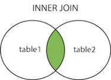
Characters
| Character | Stand ID |
|---|---|
| Jotaro Kujo | 1 |
| Polnareff | 2 |
| Jonathan Joestar | null |
Stands
| Stand ID | Stand |
|---|---|
| 1 | Star Platinum |
| 2 | Silver Chariot |
| 3 | The World |
Inner Join
| Character | Stand ID | Stand |
|---|---|---|
| Jotaro Kujo | 1 | Star Platinum |
| Polnareff | 2 | Silver Chariot |
Left join 左连接
- 左连接返回一个表，其中包含表1中的所有记录以及表2中的属性（如果存在）。 如果它不存在，那么表2列将为NULL
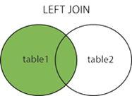
Characters
| Character | Stand ID |
|---|---|
| Jotaro Kujo | 1 |
| Polnareff | 2 |
| Jonathan Joestar | null |
Stands
| Stand ID | Stand |
|---|---|
| 1 | Star Platinum |
| 2 | Silver Chariot |
| 3 | The World |
Left Join
| Character | Stand ID | Stand |
|---|---|---|
| Jotaro Kujo | 1 | Star Platinum |
| Polnareff | 2 | Silver Chariot |
| Jonathan Joestar | null | null |
Right join 右连接
- 右连接就像左连接一样，但它包含表2中的所有记录，以及表1中的属性（如果存在），如果没有，它们将为NULL：
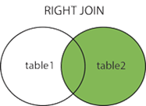
Characters
| Character | Stand ID |
|---|---|
| Jotaro Kujo | 1 |
| Polnareff | 2 |
| Jonathan Joestar | null |
Stands
| Stand ID | Stand |
|---|---|
| 1 | Star Platinum |
| 2 | Silver Chariot |
| 3 | The World |
Right Join
| Character | Stand ID | Stand |
|---|---|---|
| Jotaro Kujo | 1 | Star Platinum |
| Polnareff | 2 | Silver Chariot |
| null | 3 | The World |
Full outer join 全外连接
- 两边的所有行都保留
- 这将返回表1和表2中的所有记录，如果任何外键为空，则相应的列将保留NULL
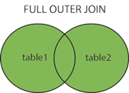
Characters
| Character | Stand ID |
|---|---|
| Jotaro Kujo | 1 |
| Polnareff | 2 |
| Jonathan Joestar | null |
Stands
| Stand ID | Stand |
|---|---|
| 1 | Star Platinum |
| 2 | Silver Chariot |
| 3 | The World |
Full Outer Join
| Character | Stand ID | Stand |
|---|---|---|
| Jotaro Kujo | 1 | Star Platinum |
| Polnareff | 2 | Silver Chariot |
| Jonathan Joestar | null | null |
| null | 3 | The World |